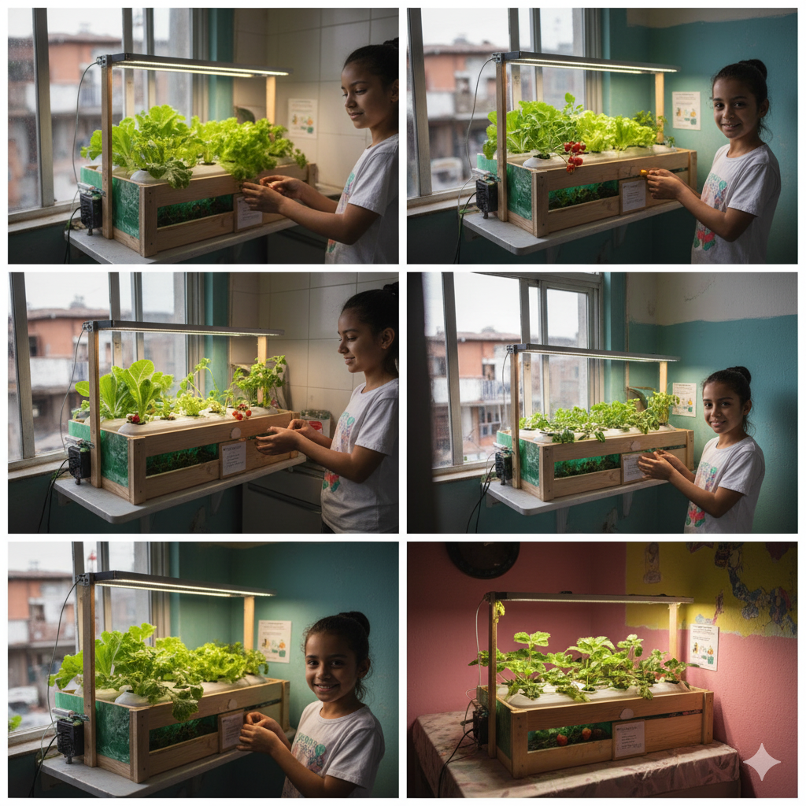
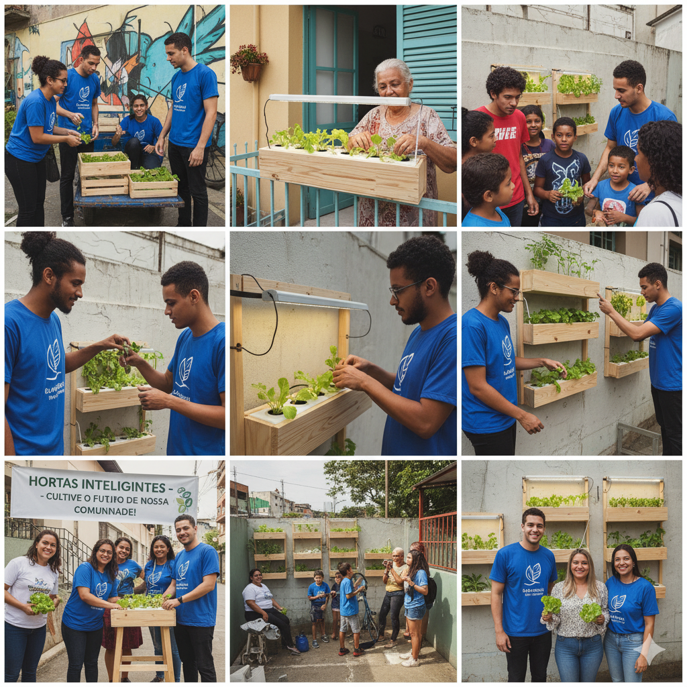

Nossa História
O projeto Hortamática nasceu da observação de um desafio comum nas cidades: a desconexão das pessoas com a natureza e a origem dos alimentos. Muitas famílias e escolas queriam cultivar seus próprios alimentos, mas esbarravam na falta de espaço, de tempo ou de conhecimento.
A ideia surgiu como uma solução simples e acessível para esse problema. Por que não criar um kit que permitisse a qualquer pessoa cultivar uma pequena horta em casa ou na escola, de forma fácil, limpa e com a ajuda da tecnologia? Assim, o projeto começou com o objetivo de resgatar o prazer de plantar, colher e comer alimentos orgânicos, mesmo em pequenos espaços urbanos.
Missão
Promover a alimentação saudável e a educação ambiental através da tecnologia, tornando o cultivo de alimentos orgânicos acessível a todos, em qualquer lugar.
Visão
Ser a principal referência em soluções de agricultura urbana, inspirando a criação de comunidades mais verdes, saudáveis e conectadas com a natureza.
Valores
Sustentabilidade
Nosso compromisso é com o meio ambiente e com o futuro do planeta, usando materiais sustentáveis e incentivando práticas ecológicas.
Inovação
Buscamos constantemente novas tecnologias para aprimorar nossos kits e oferecer a melhor experiência de cultivo.
Acessibilidade
Acreditamos que todos devem ter a oportunidade de cultivar seus próprios alimentos, independentemente de sua experiência ou espaço disponível.
Qualidade de Vida
Nossos produtos são projetados para melhorar a saúde e o bem-estar de nossos clientes e do meio ambiente.
Sustentabilidade e Empregabilidade
O projeto das Hortas Urbanas Inteligentes não beneficia apenas quem as cultiva; ele tem um impacto positivo muito maior, promovendo tanto a sustentabilidade quanto a empregabilidade.
Sustentabilidade
Em termos de sustentabilidade, os kits incentivam a produção de alimentos orgânicos em casa, reduzindo a necessidade de transporte de longa distância, o uso de embalagens plásticas e a exposição a agrotóxicos. Além disso, o sistema de irrigação automatizada otimiza o uso da água, evitando o desperdício.
Empregabilidade
A empregabilidade é gerada em várias frentes. A produção e a instalação dos kits criam oportunidades de trabalho para a comunidade local. Isso inclui desde a fabricação dos componentes com materiais sustentáveis até a montagem e a entrega dos kits. O projeto também pode gerar novos negócios para quem se especializa na instalação e manutenção dessas hortas em residências, escolas e até mesmo empresas, criando uma nova área de atuação no mercado de tecnologia verde.
Galeria de Fotos

Horta em escola

Distribuição de Kits em comunidade carente